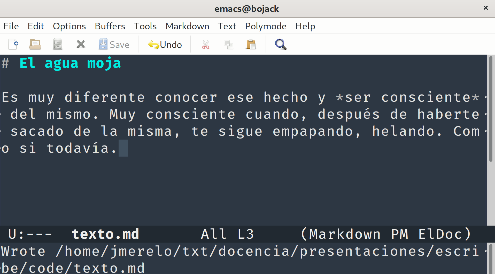
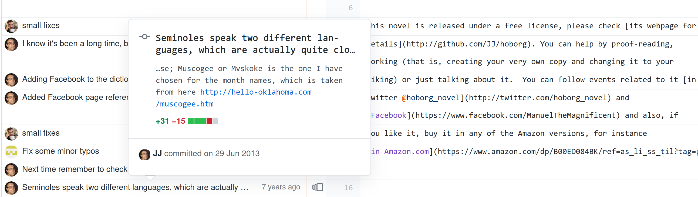

Escribir en libertad
Sofware, cultura libre, git, GitHub y la nueva literatura.
@jjmerelo para GDG WonderCoders, Ciudad de México.
¿Cómo se escribe?
Se trabaja con imaginación, intuición y una verdad aparente
Juan Rulfo
La verdad tiene que salir fuera
Escribir es como rascarse una comezón
Igual que el software libre
No existe la libertad, sino la búsqueda de la libertad, y esa búsqueda es la que nos hace libres.
Carlos Fuentes
Vamos a escribir en libertad
La mejor
posiblemente la única
forma de hacerlo
La libertad se da mediante licencias.

✓
Primera novela con licencia libre en castellano
Un paso más allá: fuentes abiertas
Software libre:
¿Proceso o producto?
Comer y rascar...
y desarrollar software libre
y escribir.
... todo es empezar
... Un proceso
de mejora continua y aprendizaje en comunidad
Hay que aprender a tachar
Juan Rulfo, sobre el proceso "perfectamente inexplicable" de escribir.
Donald M. Murray: la escritura se debe enseñar como proceso, no producto.
Preescritura, escritura y re-escritura
O tachado...
Más fácil con un sistema de control de fuentes.
Escribir es un oficio. [La inspiración] se volatiliza instantáneamente si no se la trabaja
Angélica Gorodischer
Pre-escribir: Abre repo GitHub/GitLab
Un libro debe nacer libre
Una vez creado...
git clone mi-repo/mi-novelaUsa Markdown para escribir
Y un simple editor de texto
# TODO
* [x] Encontrar la voz.
* [ ] *Backstory* del personaje principal
## Investigación
* [ ] Estudiar historia del Congo en los años 50.Escribamos
Registremos lo escrito
git add texto.md
git commit -m "Un comienzo tan bueno como cualquiera"¿Qué hay en un mensaje de commit?
Diario de escritura.
Documentación de lo escrito.
... Otra novela-espejo
En "Manny..."
.gitconfig imprescindible
[user]
name = JJ Merelo
email = jjmerelo@gmail.com
[alias]
ci = commit
st = status -sb
ca = commit -am
[core]
editor = emacs
[color]
ui = trueMensajes 50 + 80 + Markdown
git commit -a # Salta tu editor configuradoO usa git hooks
lines = File.open(ARGV[0],'r').readlines
abort "La primera línea tiene más de 50 caracteres" if lines.shift.size > 50
abort "La segunda línea debe estar vacía" if lines.size > 0 and lines.shift.chop != ''
if lines.size > 0
bad_lines = {}
lines.each_with_index do |line,i|
bad_lines[i+2] = line if line.size > 80
end
if bad_lines.keys.size > 0
puts "Todas estas líneas tienen más de 80 caracteres", bad_lines.keys.join(", ")
exit 255
end
endLa única clase de escritura es la reescritura
Ernest Hemingway
La buena escritura es reescritura
Truman Capote
☝ encontrar errores ortográficos.
Usando tests unitarios e integración continua.
Integración continua fácil: .travis.yml
language: perl
perl:
- "5.16"
before_install:
- sudo apt-get install libhunspell-1.3-0 libhunspell-dev
- curl https://raw.githubusercontent.com/JJ/Test-Text/master/data/Spanish.aff -o Spanish.aff
- curl https://raw.githubusercontent.com/SublimeText/Dictionaries/master/Spanish.dic -o Spanish.dic
install: cpanm Test::Text TAP::Harness
script: perl -MTAP::Harness -e 'use utf8;\
my $harness = TAP::Harness->new( { verbosity => 0} );\
die "FAIL" if $harness->runtests( "just_check.t" )->failed;'Comprueba y ya está.
use Test::Text;
for my $dir (qw(. pois) ) {
my $tesxt = Test::Text->new($dir, ".", "Spanish", @_);
$tesxt->check();
}
done_testing;
Pequeños traspiés...
Un libro no se termina se abandona
Gabriel García Márquez
La industria convirtió a libros y escritores en objetos de mercado.